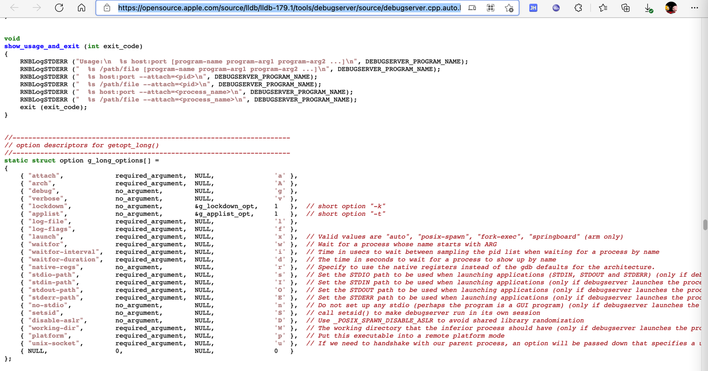

debugserver的help语法
语法概述
iPhone11-151:~ root# /Developer/usr/bin/debugserver --help
debugserver: unrecognized option `--help'
debugserver-@(#)PROGRAM:LLDB PROJECT:lldb-1300.2.10
for arm64.
Usage:
debugserver host:port [program-name program-arg1 program-arg2 ...]
debugserver /path/file [program-name program-arg1 program-arg2 ...]
debugserver host:port --attach=<pid>
debugserver /path/file --attach=<pid>
debugserver host:port --attach=<process_name>
debugserver /path/file --attach=<process_name>
语法详解
debugserver [<options>] host:<port> [<prog-name> <arg1> <arg2> ...]
参数含义：
-a process- Attach debugserver to process. The process can be a pid or executable name
-d integer- Assign the waitfor-duration
-f ?- ?
-g- Turn on debugging
-i integer- Assign the waitfor-interval
-l filename- Log to file. Set filename to stdout to log to standard output
-t- Use task ID instead of process ID
-v- Verbose
-w?- ?
-x method--launch=method- 参数缩写的说明
- 估计是：x，表示
eXecute=执行=启动运行=（此参数的全称）launch- 所以对应的着：
--launch=method
- 所以对应的着：
- 估计是：x，表示
- How to launch the program. Can be one of:
auto: Auto-detect the best launch method to use.fork: Launch program using fork(2) and exec(3).posix: Launch program using posix_spawn(2).backboard: Launch program via BackBoard Services.- The backboard option is only available in the closed-source version included in Xcode
- 参数缩写的说明
--lockdown- Obtain parameters from lockdown (?)
相关源码

void
show_usage_and_exit (int exit_code)
{
RNBLogSTDERR ("Usage:\n %s host:port [program-name program-arg1 program-arg2 ...]\n", DEBUGSERVER_PROGRAM_NAME);
RNBLogSTDERR (" %s /path/file [program-name program-arg1 program-arg2 ...]\n", DEBUGSERVER_PROGRAM_NAME);
RNBLogSTDERR (" %s host:port --attach=<pid>\n", DEBUGSERVER_PROGRAM_NAME);
RNBLogSTDERR (" %s /path/file --attach=<pid>\n", DEBUGSERVER_PROGRAM_NAME);
RNBLogSTDERR (" %s host:port --attach=<process_name>\n", DEBUGSERVER_PROGRAM_NAME);
RNBLogSTDERR (" %s /path/file --attach=<process_name>\n", DEBUGSERVER_PROGRAM_NAME);
exit (exit_code);
}
...
//----------------------------------------------------------------------
// option descriptors for getopt_long()
//----------------------------------------------------------------------
static struct option g_long_options[] =
{
{ "attach", required_argument, NULL, 'a' },
{ "arch", required_argument, NULL, 'A' },
{ "debug", no_argument, NULL, 'g' },
{ "verbose", no_argument, NULL, 'v' },
{ "lockdown", no_argument, &g_lockdown_opt, 1 }, // short option "-k"
{ "applist", no_argument, &g_applist_opt, 1 }, // short option "-t"
{ "log-file", required_argument, NULL, 'l' },
{ "log-flags", required_argument, NULL, 'f' },
{ "launch", required_argument, NULL, 'x' }, // Valid values are "auto", "posix-spawn", "fork-exec", "springboard" (arm only)
{ "waitfor", required_argument, NULL, 'w' }, // Wait for a process whose name starts with ARG
{ "waitfor-interval", required_argument, NULL, 'i' }, // Time in usecs to wait between sampling the pid list when waiting for a process by name
{ "waitfor-duration", required_argument, NULL, 'd' }, // The time in seconds to wait for a process to show up by name
{ "native-regs", no_argument, NULL, 'r' }, // Specify to use the native registers instead of the gdb defaults for the architecture.
{ "stdio-path", required_argument, NULL, 's' }, // Set the STDIO path to be used when launching applications (STDIN, STDOUT and STDERR) (only if debugserver launches the process)
{ "stdin-path", required_argument, NULL, 'I' }, // Set the STDIN path to be used when launching applications (only if debugserver launches the process)
{ "stdout-path", required_argument, NULL, 'O' }, // Set the STDOUT path to be used when launching applications (only if debugserver launches the process)
{ "stderr-path", required_argument, NULL, 'E' }, // Set the STDERR path to be used when launching applications (only if debugserver launches the process)
{ "no-stdio", no_argument, NULL, 'n' }, // Do not set up any stdio (perhaps the program is a GUI program) (only if debugserver launches the process)
{ "setsid", no_argument, NULL, 'S' }, // call setsid() to make debugserver run in its own session
{ "disable-aslr", no_argument, NULL, 'D' }, // Use _POSIX_SPAWN_DISABLE_ASLR to avoid shared library randomization
{ "working-dir", required_argument, NULL, 'W' }, // The working directory that the inferior process should have (only if debugserver launches the process)
{ "platform", required_argument, NULL, 'p' }, // Put this executable into a remote platform mode
{ "unix-socket", required_argument, NULL, 'u' }, // If we need to handshake with our parent process, an option will be passed down that specifies a unix socket name to use
{ NULL, 0, NULL, 0 }
};